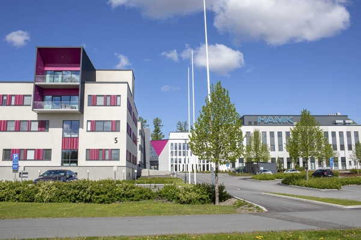

Article from wikipedia
Hämeen ammattikorkeakoulussa voi suorittaa myös ylemmän ammattikorkeakoulututkinnon, joka vastaa yliopistojen maisteritutkintoa. Opiskeluun vaaditaan AMK-tutkinto tai vastaava korkeakoulututkinto sekä kahden vuoden työkokemus. Ylempi ammattikorkeakoulututkinto antaa kelpoisuuden julkiseen virkaan, jonka vaatimuksena on ylempi korkeakoulututkinto.
Osallistuminen tutkimus-, kehittämis- ja innovaatiotoimintaan (TKI-toiminta) on olennainen osa opiskelua HAMKissa. Alueen elinkeinoelämä, erityisesti pk-yritykset ja julkinen sektori, tekevät yhdessä ammattikorkeakoulun kanssa tutkimusta tai kehittämistyötä, jonka osaksi oppiminen ammattikorkeakoulussa organisoidaan. Erilaisten hanke- ja tutkimuspalveluiden lisäksi HAMKin asiantuntijat hoitavat suoria toimeksiantoja yrityksille ja julkisille toimijoille. Kiinteä vuorovaikutus työelämän kanssa palvelee sekä opiskelijoiden kasvua ammatillisiin asiantuntijatehtäviin että elinkeinoelämän ja yhteisöjen kehittymistä.